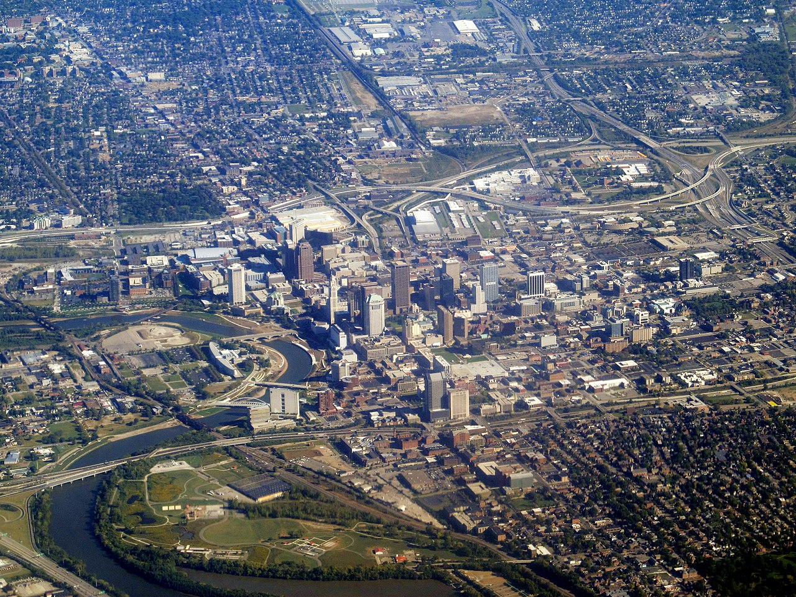

Geography
The confluence of the Scioto and Olentangy rivers is just north-west of Downtown Columbus. Several smaller tributaries course through the Columbus metropolitan area, including Alum Creek, Big Walnut Creek, and Darby Creek. Columbus is considered to have relatively flat topography thanks to a large glacier that covered most of Ohio during the Wisconsin Ice Age. However, there are sizable differences in elevation through the area, with the high point of Franklin County being 1,132 ft (345 m) above sea level near New Albany, and the low point being 670 ft (200 m) where the Scioto River leaves the county near Lockbourne. Numerous ravines near the rivers and creeks also add variety to the landscape. Tributaries to Alum Creek and the Olentangy River cut through shale, while tributaries to the Scioto River cut through limestone.
The city has a total area of 223.11 square miles (577.85 km2), of which 217.17 square miles (562.47 km2) is land and 5.94 square miles (15.38 km2) is water. Columbus currently has the largest land area of any Ohio city. This is due to Jim Rhodes's tactic to annex suburbs while serving as mayor. As surrounding communities grew or were constructed, they came to require access to waterlines, which was under the sole control of the municipal water system. Rhodes told these communities that if they wanted water, they would have to submit to assimilation into Columbus.
